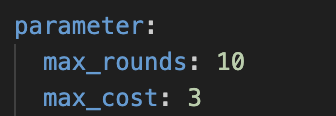

Features
This section we introduce some features and parameters we can tune and how it will influence the results.
-
debug: This feature print debug messages for detailed logging -
backend:
We support 3 backend configurations: * LLM models from OpenAI: We support the following models: gpt-4-1106-preview, gpt-4-0125-preview, and gpt-3.5-turbo-1106.
-
LLM models from Anthropic: We support three models: claude-3-haiku-20240307, claude-3-sonnet-20240229, and claude-3-opus-20240229.
-
Open-Source models deployed through TGI and VLLMs: We support five models: mistralai/Mixtral-8x7B-Instruct-v0.1, deepseek-ai/deepseek-coder-33b-instruct, llama3:70b-instruct-fp16, wizardlm2:8x22b-q8_0, and eta-llama/Meta-Llama-3-70B-Instruct.
When we use OpenAI and Anthropic backends, we operate them using an API key, which functions as an authorization key. It is loaded from secret files keys.cfg. The rate limit is determined by the API key.
When we use Open-Source models deployed through TGI and VLLMs: They provide a URL for the backend to receive responses from the model.
Users of our framework can connect to these models by obtaining the URL through these methods or by deploying them on local servers.
For example, when we are running on OpenAI/Anthropic/Open-Source models, we can change these lines in the base_config.yaml,
# OpenAI Models
backend: "openai"
model: "gpt-4o-2024-05-13"
# Anthropic Models
backend: "anthropic"
model: "claude-3-opus-20240229"
# Open-Source Models
backend: "vllm"
model: "mistralai/Mixtral-8x7B-Instruct-v0.1"
-
max-rounds: This is the maximum number of rounds to run. We defaultly set it to 10 rounds. Increasing the number of rounds can lead to more thorough exploration, testing, or refinement, as more iterations allow for more extensive analysis. However, it’s important to balance this with system constraints like computational time and resources. -
max-cost: This is the maximum cost of the conversation, default in monetary terms is 10.

skip-exist: This feature will skip existing logs and experiments, useful for avoiding duplicates.